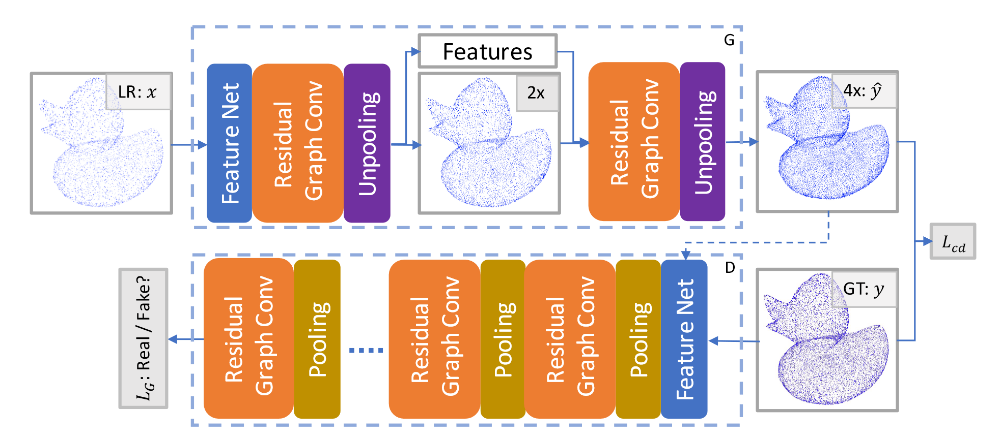
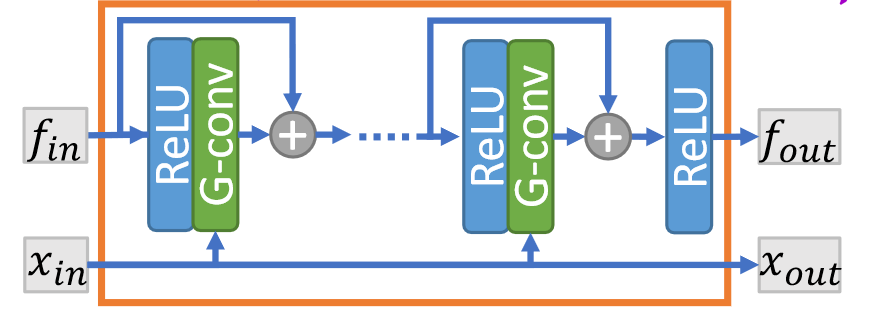
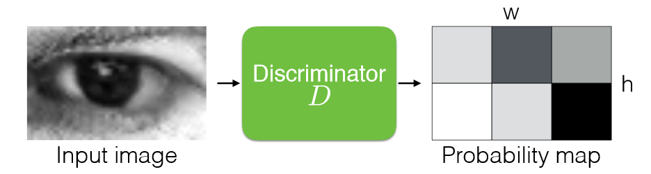

论文：Point Cloud Super Resolution with Adversarial Residual Graph Networks
以前的笔记原文占比太多了，以后就只写重要的部分。
方法
AR-GCN 方法概述
AR-GCN 由两个网络组成，生成器 $G$ 和鉴别器 $D$ 。其中 $G$ 通过逐步上采样输入的 LR 来生成 HR 点云，而 $D$ 负责辨别 HR 点云是真还是假。

论文提出了一个联合损失函数：
其中 $\lambda$ 控制损失函数 $L_{cd}$ 和 $L_G$ 的权重比。$L_{cd}$ 度量了 $y$ 和 $\hat{y}$ 之间的距离，类似于图像超分辨率中的 $L_2$ 损失：
$L_{cd}$ 是 CD 距离的变体。原始倒角距离由两部分组成：$L_{cd}$ 和 $\hat{L}_{cd}$ ，两者形式上对称。但 $\hat{L}_{cd}$ 会促使预测点云 $\hat{y}$ 与输入相同，导致点云出现重复点（后续可以实验证明一下）。因此论文删去了 $\hat{L}_{cd}$ 。
$L_G$ 损失则借鉴了 LSGAN（最小二乘生成对抗网络），被称作图对抗损失。LSGAN 主要工作是将 GAN 中的交叉熵损失函数替换为了最小二乘损失函数，克服了原始 GAN 生成结果不稳定、图像质量差的问题。具体有关 GAN 网络的原理及改进，在我另一篇笔记中有详细说明。以此有生成器和鉴别器的训练指标：
简单来说，AR-GCN 使用了生成对抗网络，生成器和鉴别器的损失函数借鉴了 LSGAN 的定义方法；此外，问题的本质仍然是上采样问题，因此加入点云间的相似性度量，指导生成器的训练。论文通过设计新的联合损失函数，将 GAN 和点云上采样结合了起来。
残差图卷积生成器
首先来看生成器的组成。生成器的目标是将点云上采样，包含了残差图卷积块、反池化块以及特征网络。
残差图卷积块

作者认为 PointNet++ 对中心点邻近点一视同仁，而图卷积的性能更加优异。观察上图，对于输入的特征 $f_{in}$ 和输入点云 $x_{in}$ ，通过 $x_{in}$ 在每次卷积时查询近邻点 $N(p)$ ，则每一层卷积的运算为：
其中 $w_0,w_1$ 是可学习的参数，$x_{in}$ 和 $x_{out}$ 没有区别。同时注意到块中引入了残差连接来提升性能。思路和 DGCNN 很类似，但 DGCNN 更关注边特征，而这里以点特征为主体。同时 DGCNN 的图是动态更新的，也是一点不同。
反池化块
反池化的目的是增加点的数目。它首先通过残差图卷积块中的 G-Conv 层，将特征转换为 $\hat{n}\times 6$ 的张量，然后重塑为 $\hat{n}\times2\times3$ ，记作 $\delta x$ ，然后将原始点坐标复制一份，加到坐标残差上。反池化块的宗旨是预测输入点和输出点之间的残差，比直接预测点坐标更快，这在 EC-Net 中就有阐述。
反池化块仅仅重塑了坐标，但破坏了特征。因此论文依然利用残差图卷积块所得到的特征，进行插值得到新点云 $x_{out}$ 中每点的特征：
可以看到，此处对最近邻搜索 $N(p)$ 标注了搜索集合为 $x_{in}$ ，但计算的点坐标是来自 $x_{out}$ 的。个人觉得，如果把预测的残差和原始特征放进一个图卷积来预测新的特征，或许会更好一些，这里相当于直接用了平均池化层。
特征网络
在进入残差图卷积块之前，需要提取点特征。论文采用了简单的 PointNet 结构，对每个点获取最近邻点，得到张量 $k\times 3$ ，然后通过一系列逐点卷积加上一个最大池化层，转换为 $1\times c$ 的特征 $f^p$ 。
渐进式上采样
另外，论文采用了两次 $2\times$ 的上采样，并在实验中发现这样做的精度更好。
图判别器
图判别器的结构依然基于残差图卷积块和特征网络，事实上，从第一张图可以看出，判别器和生成器唯一的区别就是用池化层替代了反池化层，最终输出一个标量预测。池化层的运算方法很简单，首先将点进行最远点采样，然后计算剩余点的特征为周围近邻点特征的池化：
特别的是，论文没有采用逐步下采样至单个标量的方式，因为这样做会导致伪像（我的理解是一些细微的噪声很难被整体鉴别器察觉，导致生成的数据上有伪影）。因此在这里鉴别器的输出包含不止 1 个点，并对每个点的局部 patch 进行鉴别，通过交叉熵来计算最终的总损失值。这里实际上是借鉴了另一篇文章：Learning from Simulated and Unsupervised Images through Adversarial Training ，下图很直观地说明了这种方法。

结论
主要的思路和方法就是以上这些，论文原文讲得非常详细。总得来说，AR-GCN 很好地在上采样过程中结合了 GAN 的思路，因此对于未见过的数据集有更强的泛化能力，能够生成细节更丰富的结果。并且通过回归坐标残差来提升收敛速度和稳定性，通过渐进式上采样取得更优的效果。